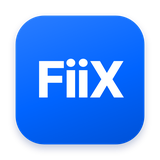

FiiX
웹페이지를 주소만 넣으면 Figma 레이어로
무료쓰는 순서
- FiiX 앱 설치
위 버튼으로 받아서 설치하고 실행해요. 처음 열 때 경고가 뜨면 아래 "경고가 떠요"를 보세요.
- 웹페이지 캡처
앱에 사이트 주소를 넣고 을 눌러요. 상세정보만 찍고 싶으면 를 쓰세요.
- Figma 플러그인 등록 (딱 한 번)
앱 맨 아래 글자를 누르면 폴더가 열려요. Figma 데스크톱 앱에서 를 누르고 그 폴더의
manifest.json을 골라요. - Figma로 가져오기
Figma에서 를 열고 목록에서 캡처를 골라 를 눌러요.
설치할 때 경고가 떠요
FiiX는 아직 Apple·Microsoft 인증을 받지 않은 무료 앱이라 처음 한 번 경고가 떠요. 앱이 잘못된 게 아니에요. 아래대로 한 번만 허용하면 돼요.
Windows — "Windows의 PC 보호" 창이 떠요
- 창에서 추가 정보를 눌러요.
- 나타나는 실행 버튼을 눌러요.
Mac — "'FiiX'을(를) 열지 않음" 창이 떠요
- 먼저 dmg를 열어 FiiX를 응용 프로그램 폴더로 끌어다 놓아요. (외장 하드나 dmg 안에서 바로 열면 안 돼요)
- FiiX를 열면 뜨는 창에서 완료를 눌러요. 휴지통으로 이동은 누르지 마세요.
- 시스템 설정 → 개인정보 보호 및 보안으로 가서 아래로 내려요.
- "FiiX"이(가) 차단되었습니다 옆의 그래도 열기를 누르고 Mac 암호를 넣어요.
- FiiX를 다시 열고 열기를 눌러요. 그다음부터는 그냥 열려요.
위 방법이 안 되면 — 터미널 앱에 아래 한 줄을 붙여넣고 Enter를 누른 뒤 FiiX를 열어요.
xattr -dr com.apple.quarantine /Applications/FiiX.app새 버전 dmg로 바꿔 끼울 때마다 한 번씩 다시 필요할 수 있어요. 또 압축 풀기 오류(513)는 외장 하드에 푸는 경우에 생기니, 꼭 Mac 안쪽 폴더(다운로드·데스크탑)에서 열어 주세요.
자주 묻는 것
Figma 데스크톱 앱이 꼭 있어야 하나요?
네. 플러그인을 파일로 등록하는 기능은 Figma 데스크톱 앱에서만 돼요. 웹 브라우저의 Figma에서는 등록할 수 없어요.
새 버전은 어떻게 받나요?
Windows 설치형은 새 버전이 나오면 저절로 받아 두고 다음에 켤 때 바뀌어요. Mac은 앱 아래쪽에 "새 버전 있음"이 뜨면 이 페이지에서 새로 받아서 덮어쓰면 돼요. Figma 플러그인은 앱이 알아서 최신으로 맞춰 줘요(Figma에서 플러그인을 닫았다 다시 열면 돼요).
로그인이 필요한 사이트도 되나요?
네. 앱의 로 열린 창에서 직접 로그인하면 돼요. 로그인 정보는 내 컴퓨터의 FiiX 안에만 저장되고 어디로도 보내지 않아요.
제 캡처가 어딘가로 전송되나요?
아니요. 캡처는 내 컴퓨터에 저장되고, 같은 컴퓨터의 Figma 플러그인만 읽어 가요(127.0.0.1에만 열려 있어 다른 기기에서는 접근할 수 없어요).